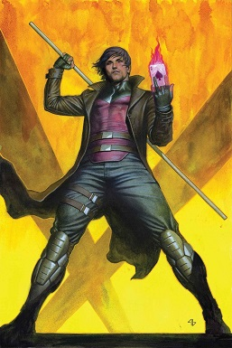

Gambit (Remy Etienne LeBeau) is a fictional character appearing in American comic books published by Marvel Comics, commonly in association with the X-Men. The character was created by writer Chris Claremont and artist Jim Lee. Drawn by artist Mike Collins, Gambit made his first appearances in The Uncanny X-Men Annual #14 (July 1990) and The Uncanny X-Men #266 (Aug. 1990).[1][2]

Gambit belongs to a subspecies of humans called mutants, who are born with superhuman abilities. Gambit has the ability to mentally create, control, and manipulate pure kinetic energy to his desire. He is also incredibly knowledgeable and skilled in card throwing, hand-to-hand combat, and the use of a bō staff. Gambit is known to charge playing cards and other objects with kinetic energy, using them as explosive projectiles.
He was part of a thieves' guild before becoming a member of the X-Men. Given his history, few X-Men trusted Gambit when he joined the group. There was consistently a source of stress between him and his on-again, off-again love interest and eventual wife Rogue. This was exacerbated when Gambit's connections to villain Mister Sinister were revealed, although some of his team members accept that Gambit honestly seeks redemption. Often portrayed as a "ladies' man," Gambit has shown a more vulnerable side of himself over the years, especially when it comes to Rogue. Gambit remains fiercely proud of his Louisiana heritage and speaks in a Cajun accent.